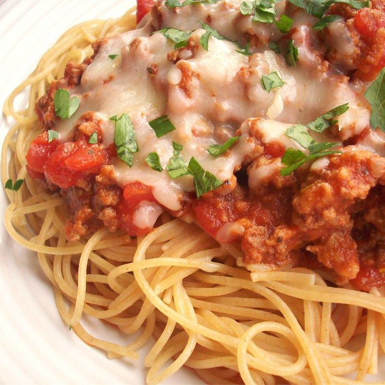

Spaghetti

- 4 Italian sausage links
- 1 pound lean ground beef
- 1 yellow onion, chopped
- 2 cloves garlic, chopped
- 1 tablespoon olive oil
- 1 (15 ounce) can tomato sauce
- 1 (14.5 ounce) can whole peeled tomatoes
- 1/4 cup chopped fresh oregano
- 1 teaspoon salt
- 1 teaspoon dried basil
- 1 bay leaf
- 1/4 teaspoon ground black pepper
- 1 (16 ounce) package dry spaghetti
- 1/2 cup grated Parmesan cheese
Steps
- Slice sausages lengthwise, leaving links attached along one side; lay flat in a large skillet. Cook over medium heat until browned and cooked through, 5 minutes, flipping once. Transfer to a plate; set aside.
- Add ground beef, onion, garlic, and olive oil to the same skillet over medium heat; cook and stir until onion is translucent and beef is browned and crumbly, about 10 minutes. Drain all but 2 tablespoons drippings from the skillet. Stir in tomato sauce, tomatoes, oregano, salt, basil, bay leaf, and black pepper; simmer, uncovered, over low heat until flavors have blended, about 1 hour, stirring occasionally. Remove and discard bay leaf.
- Preheat the oven to 350 degrees F (175 degrees C).
- Bring a large pot of lightly salted water to a boil. Cook spaghetti in the boiling water, stirring occasionally, until tender yet firm to the bite, 8 to 10 minutes. Drain. Stir spaghetti into sauce.
- Divide spaghetti and sauce among individual oven-safe baking dishes or plates; top each with a cooked half sausage and sprinkle with Parmesan cheese.
- Bake in the preheated oven until cheese is melted and begins to brown, 5 to 10 minutes.
Home